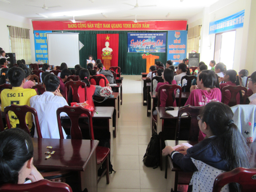
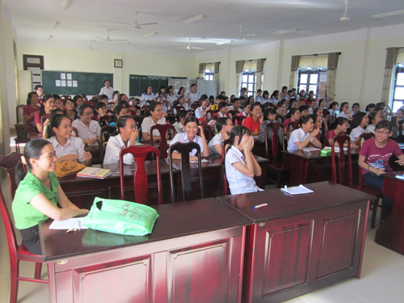
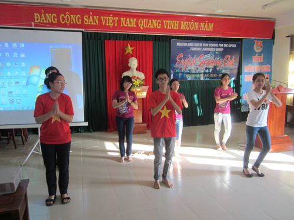
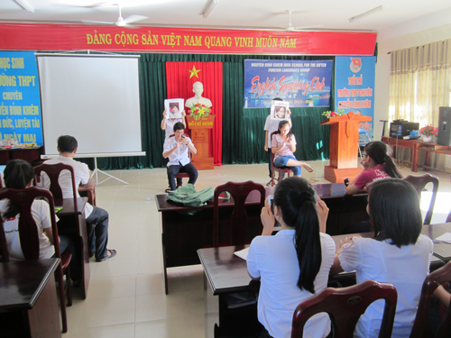
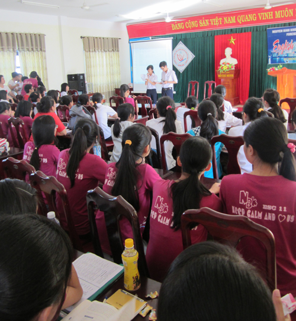

Hoạt động của câu lạc bộ Tiếng Anh

Lần cập nhật cuối lúc Thứ sáu, 29 Tháng 11 2013 09:58 Viết bởi Administrator Thứ sáu, 29 Tháng 11 2013 09:41
Câu lạc bộ tiếng Anh (English Speaking Club) của tổ Ngoại ngữ trường THPT chuyên Nguyễn Bỉnh Khiêm - Quảng Nam được thành lập và ra mắt chương trình hoạt động đầu tiên từ năm học 2011-2012 đến nay đã được 7 đợt (2 chương trình / 1 học kỳ). Chương trình sinh hoạt đầu tiên của năm học này (tổ chức vào tháng 11 / 2013) nhằm chào mừng những học sinh khối 10 mới gia nhập CLB. Cũng như các đợt sinh hoạt trước, tổ Ngoại ngữ giao cho học sinh lớp 11 chuyên Anh thiết kế nội dung và đóng vai trò là người điều khiển chính của chương trình, các thầy cô bộ môn là người hướng dẫn, cố vấn cho các em.

Chủ đề của chương trình sinh hoạt này là “Technology and You”, một chủ đề tưởng chừng như rất “khô khan” và khó cuốn hút học sinh tham gia. Nhưng với việc ứng dụng công nghệ thông tin trong xây dựng và thiết kế nội dung khá hấp dẫn, sinh động đã thực sự cuốn hút các thành viên câu lạc bộ và tham gia rất tích cực.

Mở đầu là một số tiết mục văn nghệ được các em học sinh dàn dựng công phu và với phong cách biểu diễn khá tự tin đã làm cho không khí Hội trường thật sôi động hứa hẹn một buổi sinh hoạt vui tươi và nhiều ý nghĩa.

Thú vị nhất có lẽ là phần tranh luận (debate) sau mỗi trò chơi kèm những slide trình chiếu về chủ đề “Technology and You” đã khiến cho hội trường “nóng” lên khi được những MC Hoàng Phương, Văn Thiên gợi ý nêu “vấn đề”. Ngay cả các em học sinh khối 10 lần đầu tham dự cũng mạnh dạn nêu ý kiến của mình. Và chính những điều đó đã giúp cho hoạt động của câu lạc bộ tiếng Anh thật sự vui và bổ ích. Các em có được một sân chơi mà ở đó các em không những có điều kiện trau dồi và sử dụng tiếng Anh thật tự nhiên mà còn rèn luyện các kỹ năng mềm như kỹ năng giao tiếp và làm việc nhóm.

Chương trình sinh hoạt câu lạc bộ lần thứ nhất năm học 2013-2014 kết thúc bằng một party nhẹ, thân mật cùng với những ca khúc khá sinh động do các diễn viên không chuyên của các lớp chuyên Anh trình diễn.

Câu lạc bộ tiếng Anh của tổ Ngoại ngữ được tổ chức đều đặn và thường kỳ (2 đợt / 1 học kỳ) dưới sự hướng dẫn của các thầy cô tổ Ngoại ngữ sẽ là sân chơi bổ ích cho tất cả các em học sinh của trường THPT chuyên Nguyễn Bỉnh Khiêm. Tuy nhiên, ngoài học sinh của ba lớp chuyên Anh 10, 11, 12; CLB vẫn chưa thu hút được sự tham gia của đông đảo học sinh của các khối chuyên khác trong trường. Hy vọng rằng, trong đợt sinh hoạt tiếp theo của học kỳ I (2013 - 2014) do lớp 10 chuyên Anh đảm nhận sẽ đem đến những điều mới lạ, hấp dẫn và thu hút nhiều hơn nữa các em học sinh trong toàn trường.
(Tin bài: Lê Viết Hà -Tổ Ngoại ngữ)
- 04/09/2013 07:00 - Tuyên dương khen thưởng học sinh đỗ thủ khoa và đạ…
- 02/04/2013 09:37 - GIẢI THỂ THAO HỌC SINH TRƯỜNG THPT CHUYÊN NGUYỄN …
- 26/12/2012 09:24 - Triển khai công tác giáo dục An toàn giao thông, t…
- 31/10/2012 18:15 - Công đoàn trường tổ chức sinh hoạt giao lưu kỉ niệ…
- 20/09/2012 15:30 - Khẩu hiệu có đem lại hiệu quả giáo dục?